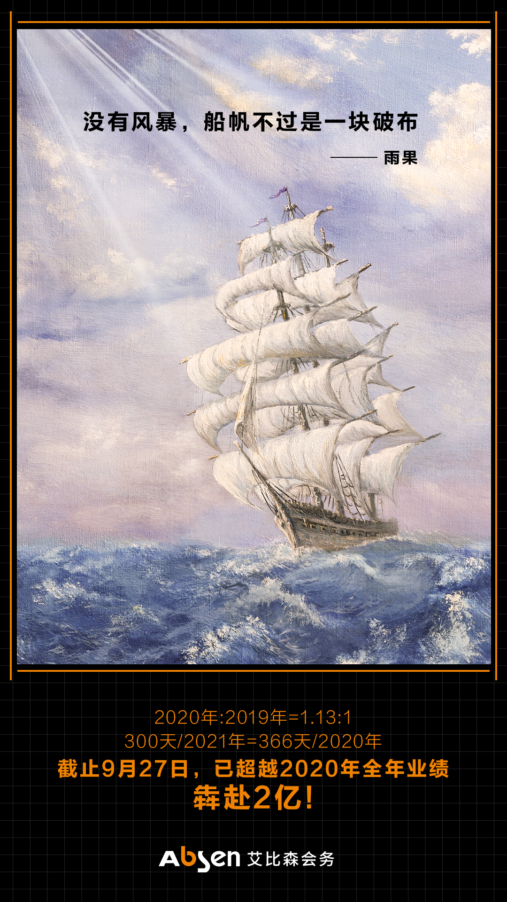

写在前言：这是活动汪策划的专访栏目《对话公关活动公司》第四期，旨在通过深入走访优秀的公关活动公司，输出有价值的内容。展现不同公司的业态，促进甲方、业内对其进行深入了解，从而为行业创新合作，挖掘更多可能。
此次采访的对象是觉泽会务（全称：上海觉泽会议服务有限公司），这家公司成立于2018年12月，背靠上市母公司（觉泽）和超强的团队作战能力，连续3年实现年营收过亿，完成全国31个城市办事处，北上广深成5大分公司的战略布局，员工已超过200人。
那这家现象级黑马公司是如何切入公关活动行业，又是如何在3年时间里做到了逆势增长？这家企业到底有着怎样的独特企业文化？今年他们又做了哪些新的业务版块......围绕这些问题，大汪联系到了觉泽会务总裁吕杨，进行一次深入对话，带着大家近距离了解觉泽会务的发展历程。
切入会务腰底部市场
大汪：据我所知，吕总是从生产制造业跨界而来的行业新兵？这里面有什么故事可以分享的吗？
吕总：可以说是一个偶然造成的必然。一开始我们是拓展了一个新业务，在酒店场景提供LED屏的定点租赁业务，并且很快在全国投放了300来家酒店，550个宴会厅。
疫情前，我们每年要为来酒店开会的客户提供2万场左右的控屏服务。但是在提供这项服务的时候，大量酒店客户都会咨询除了LED屏能不能提供灯光音响，能不能提供简单物料制作，能不能提供人员服务等等，甚至到了最后有很多客户问能不能帮他们承办整个会议活动。因为年服务场次基数大（2万场/年）哪怕只有5%的转换率也是1000场会议服务。
于是我们在上海做了试点，派人驻守在酒店接待酒店的会议客户。结果很成功，虽然客单价不高，但是决策简单，试点期间询盘转换率竟然高达98%。人均产出和毛利贡献都远高于行业平均水平。
我们在正确的时间、正确的地点，帮助正确的人解决了他的真实需求。无意中切入到腰底部零散客户这个蓝海领域。于是，我们开始认真思考这个商业机会，并且在2018年输出了我们的战略规划三步曲。同年12月5日，从母公司剥离出来，成立了觉泽会务这家公司。
大汪：觉泽会务入局活动行业好像和其他公司不太一样，自带流量和资源。成立时间才3年就实现年签单1.8亿，收入1.35亿元。你们是有借助母公司觉泽的资源吗？又是如何用好这些资源的？
吕总：2019年是第一个财年，我们签单就破亿了，收入也有7000多万，2020年开年就疫情，我们签单和收入都同比增长10多个点，2021年更是签单和收入同比增长60%+。虽然我们并没有这个行业的积淀，但是我们确实有几个“利器”。

第一个：毕竟是上市公司背景，在成立之初从集团继承了300家酒店投放的15000多平方米LED屏，还有一定的现金。这个对于同行初创企业来说已经是含着金钥匙出生了。LED屏租赁业务，本身是一个正向现金流业务和盈利业务，而且还是一个获客渠道。她为我们前期发展布局提供了资金优势和客户资源。
第二个：也是我认为和很多普通同行不太一样的地方，我们先考虑的不是今天多拓展一个客户，明天多拿一个订单。我们会先制定清晰的战略规划，要知道这家公司去到哪里。
比如，在2019-2021年，是战略三步曲的第二步，是要快速积累客户，建设专业团队，打造能力，铸造品牌，整合产业链商家、完善场景生态链的。虽然疫情突然到来，但是我们非常清楚我们这个时候应该干什么，所以在行业大量裁员降薪的时候，我们发全薪、逆势招聘、跑马圈地，2020-2021是觉泽弯道超车的两年，我们初步完成了客户储备和团队能力建设。
大汪：觉泽会务从成立之初就确定了走全国直营模式，想问下目前在哪些城市设有分公司，以及各自有差异化运营的地方吗？
吕总：我们的酒店业务在全国31个城市有办事处，另外，我们在北上广深成有5大分公司。分公司主要输出客户、创意、设计等核心能力，办事处协同项目统筹、落地执行。
另外，从业务布局上，5大分公司还是有差异的。比如，北京偏重PR活动，在创意能力上投入重兵。深圳试点公关传播，在新兴市场新赛道上做尝试。成都偏重传统会务服务。我们从业务上还是会根据不同区域做不同定位的。
还有，在管理上，我们高度扁平化。每个分公司的leader在预算和战略规划的指导下有很强的自主管理空间。我应该是整个公司最不贴近业务的人，基本上不签单，不见客户。
大汪：据我所知，活动公司基本上都是按照小组制或是项目制来做项目？你们采用了哪种模式？这样做的好处又在哪里？
吕总：在目前阶段来说，应该是两者融合的，比如，拿深圳分公司举例子，他们有IT互联网业务组，有金政医业务组，这个是按照行业划分的，在创意和项目统筹上更加熟悉行业，更加专业。
但是落地到项目执行上，经常会把PM相互拆借和混用，这样一个是提升PM的经验，一个是可以让工作量更加饱和。这2个方式其实都是行业存在很久的了，每个企业在不同体量，不同发展阶段适合的模式并不完全一样。合适自己的最好。
大汪：大部分活动公司受到疫情不同程度影响：业务受损、核心骨干退场.....反观觉泽会务连续3年做到了增速。您认为最重要的原因是什么？
吕总：首先肯定是集团对我们这个业务的认同，疫情下发全薪、逆势招聘，是用资金换时间换市场份额的做法。这个需要集团对我们战略的认同和支持。所有的一切结果基于这个前提。
其次是文化，整个觉泽集团都是把企业文化放在很重要的位置的，很多人觉得这个是很虚的东西，但是作为12年的觉泽老兵，我深刻的认知到文化在逆境中能爆发出来的能量，我们的团队和疫情越斗越勇，我们2020年2月就复工了，积极联系客户“假设上半年疫情办不了活动，您也不能闲着对吧，我们把下半年活动整体规划一下？”我印象非常深的是，2020年Q1我们就签了3000多万的年框，4月初我们在全国8个城市办了该城市疫情后的第一场有规模的活动。但是我们的同行很多5月、6月才复工。
我们就像准备充分武装到牙齿的士兵，冲刺到了还在睡觉的对手阵营，那段时间的90%+的中标率真的高到离谱。
还有是战略，我们清楚我们要去哪里，所以这几年的目标是做什么，如果碰到疫情这种意料以外的事情，我们应该怎么做？我们要付出什么代价，我们能不能接受？觉泽毕竟是有上市公司背景的公司，所以在做事情之前，我们会充分考虑，然后放手去做。
大汪：据说觉泽会务现在全国各地公司员工人数加起来有200+，这样的规模在业内属于大公司了，请问你们是如何做人才管理的？
吕总：第一个：基层员工的安全感，中坚力量的公平感，高级将领的目标感。
基层员工首先要解决收入问题，能不能解决衣食住行还有些盈余，能不能安心的工作，这点我自认为觉泽做的很好，行业内中上的收入水平，较高的提成制度，疫情期间不降薪都是很有竞争力的。相对稳定的订单来源，让基层员工有活干，不闲着，不颓废，有奔头。
中坚力量有完善的晋升通道，合理的KPI考核，让大家对未来有更大的期许。觉泽会务本身布局比较大，又处于一个快速发展期，所以只要肯干，肯付出，很快就可以成为管理干部，可以带团队。我们酒店板块华东区总监，入职3年就从普通BD到城市经理再到总监。
高级将领必须有统一的文化、一致的目标，我们每个区域总和分公司总经理都必须熟悉公司战略规划，能讲清楚觉泽现在做什么，未来要去到哪里，要具备一定的战略视野和能力。很多高管都是参加过公司战略规划以及后期迭代的。并且，我们所有管理层都要经过财务培训和考试，要对公司经营有认知，考试不合格不能上岗。
第二个：讲文化，我们在日常工作中点点滴滴都注意宣传公司文化，从新员工入职，我们就有系统完备的培训，其中就有企业文化课程。我除了培训公司业务，还有一堂课是专门讲公司文化的一个核心内容《阳光格言》。为什么讲文化，说通俗点，我们得是一伙的，我们大体上三观一致，理念相同，我们在一起工作不会不舒服。
第三个：其实前面有说过，我们给各个区域授权很大，自由空间较多。文化一致，但是百花齐放，各有千秋。甚至各个区域可以在公司总的预算和制度框架下，可以有区域自己的激励制度。相互之间各自独立，但是又能协同。
大汪：2022年7月，觉泽会务推出“开会了”平台，为客户、同行提供可标准化会务服务及供应链管理系统。活动行业是属于创意产业，您觉得可以被标准化吗？或者您认为被标准化有哪些？
吕总：一个行业要做大，必定要解决标准化和产品化的问题，因为只有标准化产品化才可复制，可复制才能规模化。觉泽本身就出生于生产制造业，追求标准化产品化是刻入基因的东西。
对于活动会务行业，仿佛定制化是主流，没有一场活动是标准的。但是，我们发现在某些场景下，标准化是存在的。首先，大家盯着的基本上都是腰部头部客户，这类客户预算多、频次高，需求复杂。
但是通过酒店渠道，我们发现存在大量的腰底部客户，他们的会议需求很简单，基本上就是解决视听需求，简单物料就结束了。我们内部称之为“标准化功能性会议”。
这类会议，对设备和物料的需求品类是标准的，比如最常用的：一块LED屏，一个签到背板、一对音响加麦。那即使是这些东西，在不同的场地尺寸和数量可能也不同，怎么解决呢？觉泽可以解决，因为我们与300家酒店、550个宴会厅合作了LED屏等AV设备，每年提供2万场会议服务。未来，会投放到800家酒店，1500个宴会厅。加盟2000家酒店，3000个宴会厅。每年服务15万场以上会议。
我们知道场地是什么样的，就可以针对每个场地预设标准产品去满足客户一个“标准化功能性会议”的最主要需求。然后，我们再整合供应链资源，比如：科大讯飞同声传译、目睹直播、云摄影、等等这类友商针对“标准化功能性会议”做的高性价比标准化产品。
《开会了》第一步要解决的是“标准化功能性会议”meeting的事情，不解决events的事情。这一步背后的核心还是已知场景下简单会议的标准化产品需求。
第二步，《开会了》会解决完整供应链和服务标准化的事情，我们现在在做一个ACP认证（ABSEN Certificated Project Manager），这个认证对产品标准，服务标准做了详细的考核，分初级、中级、高级，拿到ACP认证的项目经理，可以统筹觉泽供应链为《开会了》的客户提供定制化需求，但是产品标准和服务标准是觉泽已经做了标准化的。
大汪：非常好奇，觉泽会务有雄厚的酒店资源，且在全国合作酒店数量排行第一，为什么不去做会小二、酒店哥哥这样的场地平台呢？如果你们去做了，我相信这些平台很难能得过你们。
吕总：会小二、酒店哥哥都是这个行业的前辈了，他们有自己的商业模式，也给酒店带来不少流量，是我们学习的榜样。
其实觉泽《开会了》平台是包括场地推荐的，并且目前已经有30多个酒管集团和觉泽签约上线《开会了》，因为还处于前期的准备期，所以并没有特别对外去宣传。但我们和会小二、酒店哥哥商业模式上有一点核心的不同。我们的盈利模式不是酒店抽佣，也不向酒店收取年费服务费，这背后有几个原因。
第一个：《开会了》是解决客户开会完整业务链条，不是只解决定场地这一个环节。所以我们更侧重于打造开会的完整供应链，并做落地交付。打造“一站式便捷办会平台”，定场地只是平台其中一个环节。
第二个：觉泽会务起家是从酒店LED租赁，在成长的过程中酒店给予非常大的支持和帮助，我们也非常清楚酒店在为客户提供场地服务中付出的工作和专业性。所以，《开会了》平台直接把客户推流给酒店销售，并不经过觉泽在中间隔断一层。客户可以找酒店拿到更好的价格，获取更直接的场地信息和对接服务。
第三个：觉泽的出发点是服务客户，我们整合更强的供应链资源，并且提供觉泽认证项目经理为客户办好会，在这个过程中就可以获取应得的服务费用，我们和酒店是一起想办法降低客户办会成本，减少中间不增值的传话沟通环节。
所有酒店资料和信息都是无偿在《开会了》平台上展示的。介绍酒店，任何一个平台都不可能比酒店本身更加专业，让专业的人做专业的事情，每个链条解决每个链条该做的事情，客户才会更加信任《开会了》平台。
活下去，剩者为王
大汪：您个人能畅谈一下对活动行业的未来发展态势吗？
吕总：短期来看，不得不说疫情对行业的影响会持续，甚至会到2023年。毕竟我们这个行业受防疫政策管控最严重，又不涉及国计民生。所以，我们一直说“活下去”和“剩者为王”。这点是整个行业必须清晰认识到的，没有什么好侥幸的，先活下来。
中长期来看，疫情逼迫整个行业的企业做选择，选择自己公司的优势，让这个优势更加强，依靠这个优势存活下去，或者干脆转行，这个长远看是好事情。我是从制造业过来的，刚来的时候确实很惊讶，整个行业专业细分并不明显。任何一个企业仿佛都可以把所有的事情都做了，一方面说明行业门槛确实比其他行业低，一方面说明还没有真正到行业洗牌和整合专业化的阶段。
未来，在我们这个行业应该在每个细分领域都会有龙头企业出现，每个细分领域的专业化水平更高，整个行业竞争力会更强。最终，专业化公司在细分领域获取更多的市场份额和利润空间，最后落地做整合的公司应该是通过技术手段（比如供应链平台）提升效率做大规模，获取利润。
大汪：最后，如果让您送给活动行业的同行们一句话，您打算怎么说？
吕总：这是一个充满创意和想象的行业，也是一个流汗流泪的行业，每个项目都是一个独一无二的作品，入行了就奋斗吧，一切都是值得的！